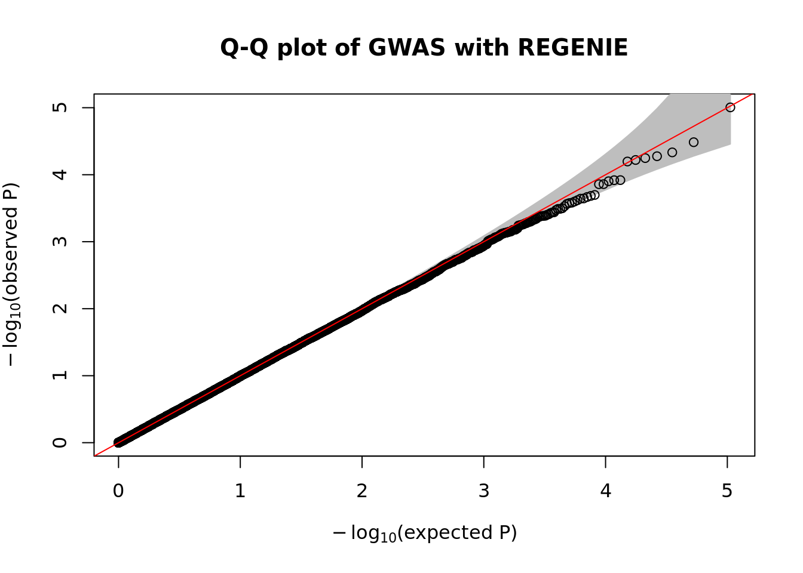

Last updated: 2022-07-25
Checks: 7 0
Knit directory: SISG2022_Association_Mapping/
This reproducible R Markdown analysis was created with workflowr (version 1.7.0). The Checks tab describes the reproducibility checks that were applied when the results were created. The Past versions tab lists the development history.
Great! Since the R Markdown file has been committed to the Git repository, you know the exact version of the code that produced these results.
Great job! The global environment was empty. Objects defined in the global environment can affect the analysis in your R Markdown file in unknown ways. For reproduciblity it’s best to always run the code in an empty environment.
The command set.seed(20220530) was run prior to running the code in the R Markdown file. Setting a seed ensures that any results that rely on randomness, e.g. subsampling or permutations, are reproducible.
Great job! Recording the operating system, R version, and package versions is critical for reproducibility.
Nice! There were no cached chunks for this analysis, so you can be confident that you successfully produced the results during this run.
Great job! Using relative paths to the files within your workflowr project makes it easier to run your code on other machines.
Great! You are using Git for version control. Tracking code development and connecting the code version to the results is critical for reproducibility.
The results in this page were generated with repository version ed55e0d. See the Past versions tab to see a history of the changes made to the R Markdown and HTML files.
Note that you need to be careful to ensure that all relevant files for the analysis have been committed to Git prior to generating the results (you can use wflow_publish or wflow_git_commit). workflowr only checks the R Markdown file, but you know if there are other scripts or data files that it depends on. Below is the status of the Git repository when the results were generated:
Ignored files:
Ignored: analysis/.DS_Store
Ignored: analysis/.Rhistory
Ignored: code/.Rhistory
Ignored: data/.DS_Store
Ignored: lectures/.DS_Store
Untracked files:
Untracked: GWAS.ma
Untracked: analysis/SISGM15_prac5Solution.Rmd
Untracked: analysis/SISGM15_prac6Solution.Rmd
Untracked: analysis/SISGM15_prac9Solution.Rmd
Untracked: analysis/Session07_practical_Key.Rmd
Untracked: analysis/Session08_practical_Key.Rmd
Untracked: causals.snplist
Untracked: data/sim_rels_geno.bed
Untracked: ldRef.bed
Untracked: ldRef.bim
Untracked: ldRef.fam
Untracked: ldRef.log
Untracked: ldRef.map
Untracked: ldRef.ped
Untracked: test1.cma.cojo
Untracked: test1.jma.cojo
Untracked: test1.ldr.cojo
Untracked: test1.log
Untracked: test2.cma.cojo
Untracked: test2.jma.cojo
Untracked: test2.ldr.cojo
Untracked: test2.log
Untracked: test3.cma.cojo
Untracked: test3.jma.cojo
Untracked: test3.ldr.cojo
Untracked: test3.log
Untracked: test4.cma.cojo
Untracked: test4.jma.cojo
Untracked: test4.ldr.cojo
Untracked: test4.log
Note that any generated files, e.g. HTML, png, CSS, etc., are not included in this status report because it is ok for generated content to have uncommitted changes.
These are the previous versions of the repository in which changes were made to the R Markdown (analysis/Session03_practical_Key.Rmd) and HTML (docs/Session03_practical_Key.html) files. If you’ve configured a remote Git repository (see ?wflow_git_remote), click on the hyperlinks in the table below to view the files as they were in that past version.
| File | Version | Author | Date | Message |
|---|---|---|---|---|
| Rmd | ed55e0d | Joelle Mbatchou | 2022-07-25 | update key |
| html | 066c9ff | Joelle Mbatchou | 2022-07-25 | Build site. |
| Rmd | cb3e604 | Joelle Mbatchou | 2022-07-25 | add key |
Before you begin:
require(data.table)
require(dplyr)
require(tidyr)
require(GWASTools)
require(ggplot2)We will be analyzing a simulated data set which contains sample structure to better understand the impact it can have in GWAS analyses if not accounted for. We will perform GWAS on a quantitative phenotype which was simulated to have high heritability and be highly polygenic.
The file “sim_rels_pheno.txt”” contains the phenotype measurements for a set of individuals and the file “sim_rels_geno.bed” is a binary file in PLINK BED format with accompanying BIM and FAM files which contains the genotype data at null variants (i.e. simulated as not associated with the phenotype).
How should we expect the QQ/Manhatthan plots to look like under this scenario?
Here are some things to try:
famfile <- fread("/data/SISG2022M15/data/sim_rels_geno.fam", header = FALSE)
famfile %>% strClasses 'data.table' and 'data.frame': 2400 obs. of 6 variables:
$ V1: int 2307 379 478 1545 990 1907 369 1694 2137 2314 ...
$ V2: int 2307 379 478 1545 990 1907 369 1694 2137 2314 ...
$ V3: int 0 0 0 0 0 0 0 0 0 0 ...
$ V4: int 0 0 0 0 0 0 0 0 0 0 ...
$ V5: int 1 2 1 1 1 2 2 1 2 1 ...
$ V6: int -9 -9 -9 -9 -9 -9 -9 -9 -9 -9 ...
- attr(*, ".internal.selfref")=<externalptr> bimfile <- fread("/data/SISG2022M15/data/sim_rels_geno.bim", header = FALSE)
bimfile %>% strClasses 'data.table' and 'data.frame': 106134 obs. of 6 variables:
$ V1: int 1 1 1 1 1 1 1 1 1 1 ...
$ V2: chr "1:12000011:A:C" "1:12000012:A:C" "1:12000019:T:C" "1:12000027:C:T" ...
$ V3: int 0 0 0 0 0 0 0 0 0 0 ...
$ V4: int 12000011 12000012 12000019 12000027 12000036 12000061 12000073 12000074 12000117 12000136 ...
$ V5: chr "A" "A" "T" "C" ...
$ V6: chr "C" "C" "C" "T" ...
- attr(*, ".internal.selfref")=<externalptr> bimfile %>% select(V1) %>% tableV1
1 2 3 4 5 6 7 8 9 10 11 12 13 14 15 16
4918 4857 4813 4772 4810 4914 4840 4696 4790 4906 4782 4756 4803 4671 4814 4869
17 18 19 20 21 22
4632 4834 4908 4942 4947 4860 yfile <- fread("/data/SISG2022M15/data/sim_rels_pheno.txt", header = TRUE)
yfile %>% strClasses 'data.table' and 'data.frame': 2400 obs. of 3 variables:
$ FID : int 2307 379 478 1545 990 1907 369 1694 2137 2314 ...
$ IID : int 2307 379 478 1545 990 1907 369 1694 2137 2314 ...
$ Pheno: num 0.00999 -1.45253 0.11097 1.11363 -0.20993 ...
- attr(*, ".internal.selfref")=<externalptr> yfile %>% pull(Pheno) %>% is.na %>% table.
FALSE
2400 yfile %>%
ggplot(aes(x = Pheno)) +
geom_histogram(colour="black", fill="white")`stat_bin()` using `bins = 30`. Pick better value with `binwidth`.
| Version | Author | Date |
|---|---|---|
| 066c9ff | Joelle Mbatchou | 2022-07-25 |
sim_rels_pheno.txt and the sim_rels_geno.{bed,bim,fam} genotype files. Only perform association test on SNPs that pass the following quality control threshold filters:system("/data/SISG2022M15/exe/plink2 --bfile /data/SISG2022M15/data/sim_rels_geno --pheno /data/SISG2022M15/data/sim_rels_pheno.txt --pheno-name Pheno --maf 0.01 --geno 0.01 --hwe 0.001 --autosome --glm allow-no-covars --out /tmp/gwas_plink")manhattanPlot() R function.plink.gwas <- fread("/tmp/gwas_plink.Pheno.glm.linear", header = TRUE)
plink.gwas %>% strClasses 'data.table' and 'data.frame': 105886 obs. of 13 variables:
$ #CHROM : int 1 1 1 1 1 1 1 1 1 1 ...
$ POS : int 12000011 12000012 12000019 12000027 12000036 12000061 12000073 12000074 12000117 12000136 ...
$ ID : chr "1:12000011:A:C" "1:12000012:A:C" "1:12000019:T:C" "1:12000027:C:T" ...
$ REF : chr "C" "C" "C" "T" ...
$ ALT : chr "A" "A" "T" "C" ...
$ A1 : chr "A" "A" "T" "C" ...
$ TEST : chr "ADD" "ADD" "ADD" "ADD" ...
$ OBS_CT : int 2400 2400 2400 2400 2400 2400 2400 2400 2400 2400 ...
$ BETA : num 0.0122 -0.018 -0.0849 0.0125 0.0111 ...
$ SE : num 0.0438 0.0362 0.0284 0.0435 0.0288 ...
$ T_STAT : num 0.279 -0.497 -2.992 0.288 0.387 ...
$ P : num 0.78 0.6192 0.0028 0.7731 0.6991 ...
$ ERRCODE: chr "." "." "." "." ...
- attr(*, ".internal.selfref")=<externalptr> manhattanPlot(
p = plink.gwas$P,
chromosome = plink.gwas$`#CHROM`,
thinThreshold = 1e-4,
main= "Manhattan plot of GWAS with PLINK"
)
| Version | Author | Date |
|---|---|---|
| 066c9ff | Joelle Mbatchou | 2022-07-25 |
qqPlot() R function.qqPlot(
pval = plink.gwas$P,
thinThreshold = 1e-4,
main= "Q-Q plot of GWAS with PLINK"
)
| Version | Author | Date |
|---|---|---|
| 066c9ff | Joelle Mbatchou | 2022-07-25 |
chisq.stats <- qchisq(plink.gwas$P, df = 1, lower.tail = FALSE)
median(chisq.stats) / qchisq(0.5,1)[1] 1.148451system("/data/SISG2022M15/exe/plink2 --bfile /data/SISG2022M15/data/sim_rels_geno --maf 0.05 --geno 0.01 --hwe 0.001 --mac 20 --write-snplist --out /tmp/qc_pass")system("/data/SISG2022M15/exe/regenie --bed /data/SISG2022M15/data/sim_rels_geno --phenoFile /data/SISG2022M15/data/sim_rels_pheno.txt --step 1 --loocv --bsize 1000 --qt --extract /tmp/qc_pass.snplist --out /tmp/regenie_step1")The prediction list file output from Step 1 contains the path to the LOCO polygenic predictions:
fread("/tmp/regenie_step1_pred.list", header = FALSE) V1 V2
1: Pheno /tmp/regenie_step1_1.locoplink.gwas %>%
select(ID) %>%
fwrite("/tmp/plink_gwas.snplist", col.names = FALSE, quote = FALSE)system("/data/SISG2022M15/exe/regenie --bed /data/SISG2022M15/data/sim_rels_geno --phenoFile /data/SISG2022M15/data/sim_rels_pheno.txt --step 2 --bsize 400 --qt --pred /tmp/regenie_step1_pred.list --extract /tmp/plink_gwas.snplist --out /tmp/regenie_step2")regenie.gwas <- fread("/tmp/regenie_step2_Pheno.regenie", header = TRUE)
regenie.gwas %>% strClasses 'data.table' and 'data.frame': 105886 obs. of 13 variables:
$ CHROM : int 1 1 1 1 1 1 1 1 1 1 ...
$ GENPOS : int 12000011 12000012 12000019 12000027 12000036 12000061 12000073 12000074 12000117 12000136 ...
$ ID : chr "1:12000011:A:C" "1:12000012:A:C" "1:12000019:T:C" "1:12000027:C:T" ...
$ ALLELE0: chr "C" "C" "C" "T" ...
$ ALLELE1: chr "A" "A" "T" "C" ...
$ A1FREQ : num 0.12 0.187 0.402 0.12 0.415 ...
$ N : int 2400 2400 2400 2400 2400 2400 2400 2400 2400 2400 ...
$ TEST : chr "ADD" "ADD" "ADD" "ADD" ...
$ BETA : num 0.00851 -0.01943 -0.0747 -0.023 0.01463 ...
$ SE : num 0.0419 0.0346 0.0272 0.0416 0.0275 ...
$ CHISQ : num 0.0413 0.3153 7.5548 0.3058 0.2823 ...
$ LOG10P : num 0.0762 0.2407 2.2229 0.2364 0.2254 ...
$ EXTRA : logi NA NA NA NA NA NA ...
- attr(*, ".internal.selfref")=<externalptr> manhattanPlot(
p = 10^-regenie.gwas$LOG10P,
chromosome = regenie.gwas$CHROM,
thinThreshold = 1e-4,
main= "Manhattan plot of GWAS with REGENIE"
)
| Version | Author | Date |
|---|---|---|
| 066c9ff | Joelle Mbatchou | 2022-07-25 |
qqPlot(
pval = 10^-regenie.gwas$LOG10P,
thinThreshold = 1e-4,
main= "Q-Q plot of GWAS with REGENIE"
)
| Version | Author | Date |
|---|---|---|
| 066c9ff | Joelle Mbatchou | 2022-07-25 |
chisq.stats <- qchisq(10^-regenie.gwas$LOG10P, df = 1, lower.tail = FALSE)
median(chisq.stats) / qchisq(0.5,1)[1] 0.9962878
sessionInfo()R version 4.2.1 (2022-06-23)
Platform: x86_64-pc-linux-gnu (64-bit)
Running under: Ubuntu 22.04 LTS
Matrix products: default
BLAS: /usr/lib/x86_64-linux-gnu/blas/libblas.so.3.10.0
LAPACK: /usr/lib/x86_64-linux-gnu/lapack/liblapack.so.3.10.0
locale:
[1] LC_CTYPE=C.UTF-8 LC_NUMERIC=C LC_TIME=C.UTF-8
[4] LC_COLLATE=C.UTF-8 LC_MONETARY=C.UTF-8 LC_MESSAGES=C.UTF-8
[7] LC_PAPER=C.UTF-8 LC_NAME=C LC_ADDRESS=C
[10] LC_TELEPHONE=C LC_MEASUREMENT=C.UTF-8 LC_IDENTIFICATION=C
attached base packages:
[1] stats graphics grDevices utils datasets methods base
other attached packages:
[1] ggplot2_3.3.6 GWASTools_1.42.0 Biobase_2.56.0
[4] BiocGenerics_0.42.0 tidyr_1.2.0 dplyr_1.0.9
[7] data.table_1.14.2 workflowr_1.7.0
loaded via a namespace (and not attached):
[1] httr_1.4.3 sass_0.4.1 bit64_4.0.5
[4] jsonlite_1.8.0 splines_4.2.1 bslib_0.3.1
[7] assertthat_0.2.1 getPass_0.2-2 highr_0.9
[10] blob_1.2.3 GWASExactHW_1.01 yaml_2.3.5
[13] pillar_1.7.0 RSQLite_2.2.14 backports_1.4.1
[16] lattice_0.20-45 quantreg_5.93 glue_1.6.2
[19] digest_0.6.29 promises_1.2.0.1 colorspace_2.0-3
[22] sandwich_3.0-2 htmltools_0.5.2 httpuv_1.6.5
[25] Matrix_1.4-1 pkgconfig_2.0.3 broom_1.0.0
[28] SparseM_1.81 purrr_0.3.4 scales_1.2.0
[31] processx_3.7.0 whisker_0.4 later_1.3.0
[34] MatrixModels_0.5-0 git2r_0.30.1 tibble_3.1.7
[37] mgcv_1.8-40 farver_2.1.1 generics_0.1.3
[40] ellipsis_0.3.2 cachem_1.0.6 withr_2.5.0
[43] formula.tools_1.7.1 cli_3.3.0 survival_3.3-1
[46] magrittr_2.0.3 crayon_1.5.1 memoise_2.0.1
[49] evaluate_0.15 ps_1.7.1 mice_3.14.0
[52] fs_1.5.2 fansi_1.0.3 MASS_7.3-57
[55] operator.tools_1.6.3 nlme_3.1-158 tools_4.2.1
[58] lifecycle_1.0.1 stringr_1.4.0 munsell_0.5.0
[61] gdsfmt_1.32.0 callr_3.7.0 compiler_4.2.1
[64] jquerylib_0.1.4 logistf_1.24.1 rlang_1.0.3
[67] grid_4.2.1 rstudioapi_0.13 labeling_0.4.2
[70] rmarkdown_2.14 DNAcopy_1.70.0 gtable_0.3.0
[73] DBI_1.1.3 R6_2.5.1 zoo_1.8-10
[76] knitr_1.39 fastmap_1.1.0 bit_4.0.4
[79] utf8_1.2.2 rprojroot_2.0.3 stringi_1.7.6
[82] Rcpp_1.0.9 quantsmooth_1.62.0 vctrs_0.4.1
[85] tidyselect_1.1.2 xfun_0.31 lmtest_0.9-40